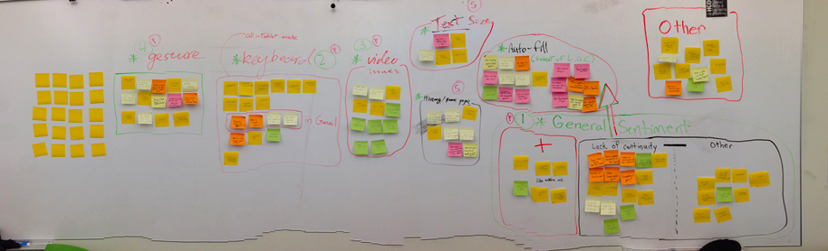

The team tested a version of the Firefox browser designed to work with a 2-in-1 device, which allows a user to work in both desktop/laptop and mobile/2-in-1 modes of operation. It was really the holistic experience — the use of the two discrete modes of operation and the back-and-forth transitions between the two — that we were evaluating, rather than each Firefox mode as independent products.
This usability study focuses on the experience in using both versions of the Firefox browser in a single device that attempts to bridge the gap between what has until now been two distinct browsing experiences. Our scope was limited specifically to gauging users' expectations and sentiments in the transition between the two browsing modes. We also observed issues that were particular to each mode.
The team designed three test sessions: 1) Watching video, 2) Viewing/Sending Email, 3) Viewing Facebook so that we can test various use of the 2in1 device. Each session contained the same task in both desktop and tablet mode. During and after the test, an interview was conducted asking their experiences with the browser (e.g. how difficult the task completion was, how different the interaction was from their expectation, etc.). We recorded user behaviors with video during the test session.
We then analyzed answers of the interview and recorded video practicing affinity diagram. The diagram helped us better sort out 7 categories of usability problem.
1. Lack of Continuity
This issue proved to be the most common and significant complaint amongst participants - Firefox clearly lacks continuity between modes on many levels.
2. Virtual Keyboard
The virtual keyboard had multiple issues that affect a variety of tasks, many of which were closely related in the problems created, but the subtle differences are worth noting as they can be associated with different tasks, the first being specific and the latter being more general: The keyboard hides the "send" button when composing email (as shown in picture below), The keyboard disappears and flashes intermittently in an unprovoked way.
3. Video
Switching modes after starting a video resulted in some discontent from our users as they were required to navigate back to the selected video and would often not play at all.
4. Gestures
Some gestures used in the browser overlapped with the gestures defined by Win8 OS.
5. History/homepage
The participants were confused with some features on the homepage in tablet mode.
6. Text-size
Several participants complained that they are not comfortable with the different font sizes in two modes.
7. Others
The participants paid more attention to the left side of the screen, so no participants used the "plus" button on the right side to create new page in tablet mode.
Overall results of the study indicates that most of the participants considered their experience of using the browser frustrating. So there are still plenty of elements that need to be redesigned and improved. To be more attractive to users and more competitive in the market, our team gives the following recommendation:
1) Make the two modes feel more like one seamless experience.
- Match the text size between modes (text size was drastically different)
- Consider revising the History/Homepage to better align with the desktop experience (participants were confused with some features on the homepage of tablet mode)
2) Improve persistence of data between modes.
- Maintain the same content from one mode to the other (participants had to start a task from the beginning after switching modes)
- All participants had to start a video from the beginning when switching modes. All participants expected to be able to continue the video where they had left off.
- Participants also sometimes lost content when switching modes.
3) Reduce overlapping browser and OS gesture functionality.
- Some gestures used in the browser overlapped with the gestures defined by the Windows 8 OS.
4) Make the keyboard more intuitive or provide more flexibility in the keyboard's location and size.
- The virtual keyboard in tablet mode prevented participants from completing certain tasks.
Test Design, Usability Testing (Moderator, Note-taker), Data Analyses
More details are available on request. (Full data report might cause some privacy issues)